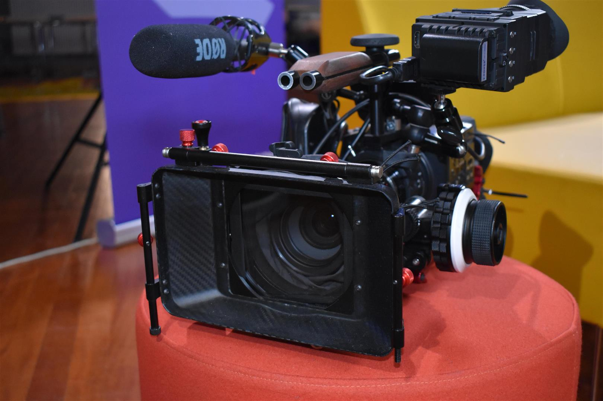
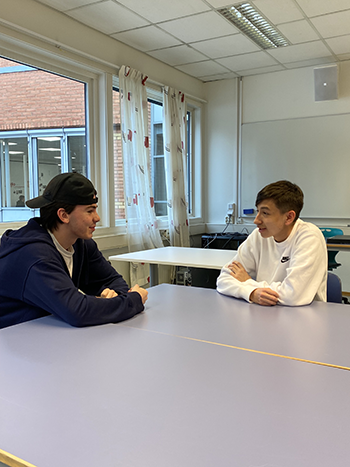

Informasjonsteknologi og medieproduksjon (IM) er et nytt yrkesfaglig løp for deg som ønsker en mer praktisk vei inn i IT- eller mediebransjen. Er for kreativ, nysgjerrig og interessert i teknologi så er dette programmet for deg!
I løpet av skoleåret legges det opp til to praksisperioder der du kan få din første smakebit av mediebransjen. Våre elever har blant annet hatt praksisperioder i Drammens Tidene, plateselskap og som informasjonsmedarbeider innen kultur, frivillighet og Drammen kommune. Tilbudet er fremdeles ferskt, med første avgangskull i 2022, så her er det er det store muligheter for å skape nye, spennende praksissamarbeid.
